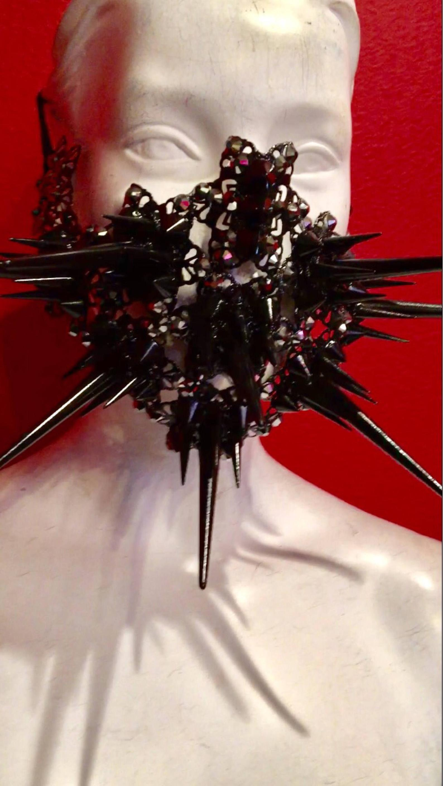
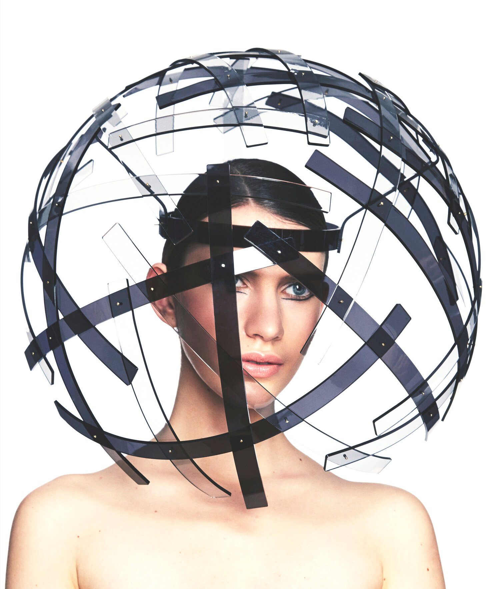

I love interactive fashion as a concept. More specifically, I have imagined clothing wearing people and influencing the human's behavior, rather than a person wearing a garment. Likewise, if our internal physiological or psychological states were personified and announced by an article of clothing-- independent of whether the wearer wanted to proclaim their feelings or not--how would that influence our interactions, perceptions, and social conduct?
As a gift to myself for graduating college, I bought myself Emoki--a lightweight EEG headset that translated the neural signal from a single point electrode to a pair of fluffy ears. [video] My Emoki headset garnered a lot of curious attention from strangers, but I soon learned that wearing my ears in public meant I was quite explicitly wearing my emotions as well. The ear motor output was coded to resemble that of a dog, and thus the focus of my attention was transparent. It was clear to observers whether I was particularly interested, not listening, suspicious, or engaged in a flow state; the vulnerability I experienced was particularly jarring and unexpected.
Here's the IndieGogo campaign video for the (now discontinued) Emoki headset:
In the many years spent neuroscience labs, I have been particularly interested in studying stress and its neuroendocrine influences on the brain and behavior. In human studies, many researchers observe changes in subjects' skin conductance (also known as Galvanic Skin Response (GSR) by measuring relative changes in sweat gland activity from two points on the hand. Increased conductance between electrodes is indicative of heighted emotional arousal or a stress response.
Students at the MIT Media lab produced a skin conductance measuring glove called the Galvactivator that glows when a change occurs. Based on their FAQ, it seems like making a similar sensor wouldn't be too hard!
 Definitely check out their commercial!
Definitely check out their commercial!
I also found a few tutorials (1,, 2) using a $10 GSR sensor and an Arduino, so this seems quite feasible.
https://www.bbc.com/news/in-pictures-22728190 https://ichef.bbci.co.uk/news/445/media/images/67906000/jpg/_67906851_67906850.jpg https://www.etsy.com/listing/558386269/spiked-knight-mask-or-headpiece
I love this PMMA/laser cut headpiece by Keely Hunter.
http://www.keelyhunter.com/keely-hunter-occasion-wear-1